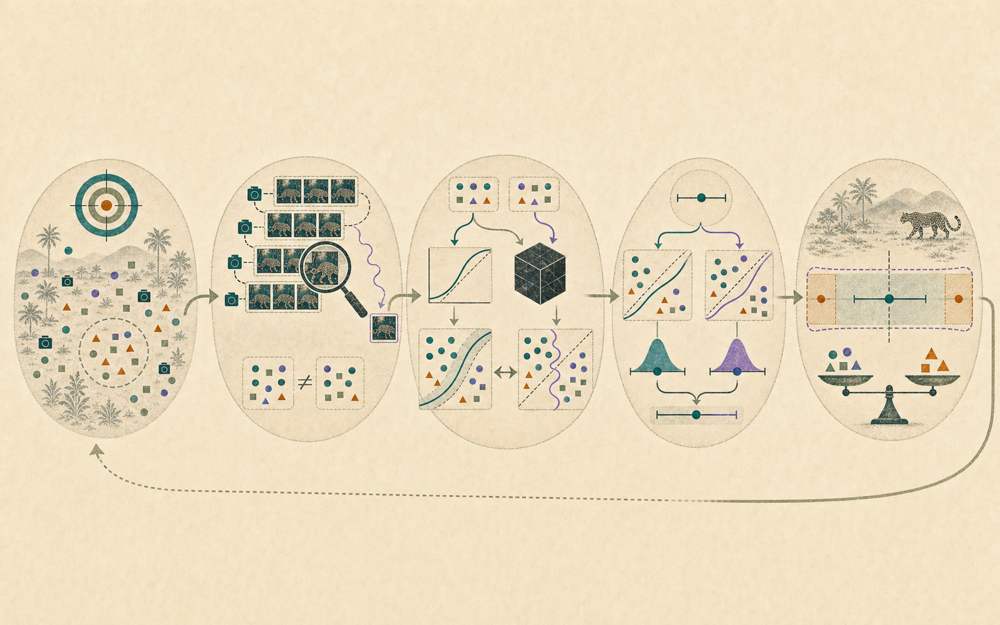

Start With A Baseline
Before trusting the AI system, build and understand a simple model that keeps the comparison honest.
Spring 2027 · Department of Statistics & Data Science
A project-centered course on evaluating AI systems with statistical reasoning: baselines, benchmarks, uncertainty, calibration, robustness, human feedback, and evidence-backed recommendations.

The course repeatedly connects current AI language to older statistical ideas.
Modern AI creates new systems, scales, and interfaces. This course asks what a statistically careful person should believe after seeing AI evaluation evidence.
Before trusting the AI system, build and understand a simple model that keeps the comparison honest.
Accuracy is an estimate. Confidence needs checking. Benchmarks measure some populations and miss others.
Students use statistical evidence to decide whether to deploy, trust, revise, or reject an AI evaluation claim.
A concise version of the course policies and expectations. The full syllabus will live in the public GitHub repo once finalized.
The first half builds shared tools. The second half uses structured project studios to apply those tools to image systems and LLM evaluation.
Draft calendar for Spring 2027. Dates will be adjusted once the official CMU calendar and room schedule are finalized.
Latest released modules appear here. The full modules page lists weeks newest first.
Teams evaluate an AI system or an AI evaluation protocol using statistical evidence.